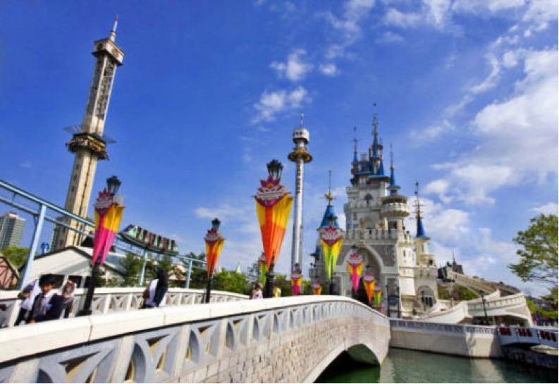
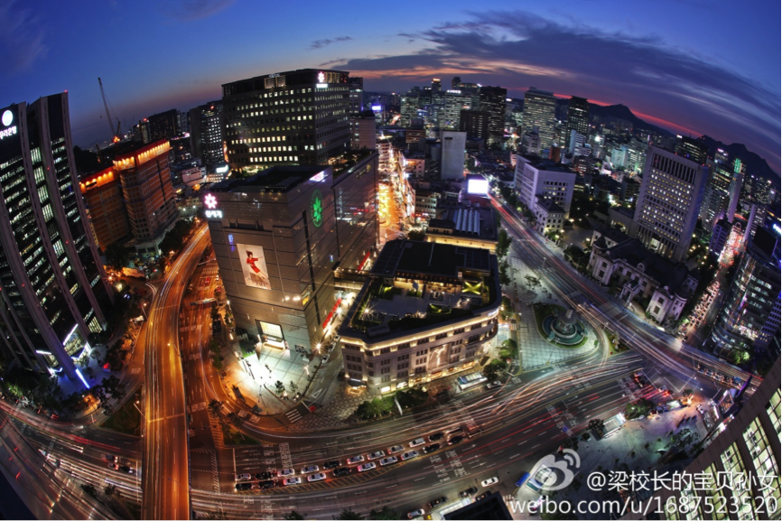

EMO的音乐旅行箱开始走起了！这是一款集音乐、旅行、交友于一体的大型文艺音乐综合史诗级节目！请大家多多支持~
我是导游EMO，注意不是EXO哦！ 鉴于仁川亚运会日益临近，一大波长腿欧巴欧尼正在逼近，于是EMO毅然决然的旅行箱的将首站选在了我们一衣带水的邻国———大韩民国！
一半是海水，一半是火焰。这句话来形容韩国的性格，是最合适不过的了。它通常示人的是充满活力的动感一面，而如果你深入的走近它，其所展现的静谧之美，更是让人为之深深地着迷。四季绮丽的风景，珍贵历史遗迹让人目不暇接。
跟着韩剧去旅行。每个女人都爱做梦，尤其是对爱情，梦想着自己由灰姑娘变成了某位“高富帅”的新娘，梦想着自己成为言情剧的女主人公…于是如今的韩剧热潮更是引得这些女孩们无限遐想，男女主角们相爱别离的每个场景，以致他们身边的每个风景，都能让你感动、心动。
韩国也是MM的购物天堂，不仅有帅哥美女养眼，还有目不暇给的时尚潮流商品可以购买、免税店、东大门、明洞、新世界百货——每一处都令人流连忘返，每一处都会让你成为不折不扣的“购物狂”。
傍晚橘色和蓝色的南山tower，有一种独特的宁静气息。在韩国的情侣，一定会来这里挂一把情人锁来见证他们的爱情。同时，这里也是著名的影视拍摄地，《来自星星的你》、《running man》也曾在这里取景。在这里俯瞰首尔，可将整个首尔景色尽收眼底。


提到韩国民俗很多人都会想到景福宫。但是这次EMO要讲的是北村韩屋村。村里的住宅全是朝鲜时代的青瓦房，作为上流层的构造形态保存至今。首尔的几个韩屋村属北村更有韵味一些，因为这里住着很多居民，有生活的气息。有八个主要景点，俗称北村八景。《仁显王后的男人》鹏道古代的住宅就是在这里。